Boss（Veltharis）C6 迴旋：灰燼迴旋（二階段）
還沒接進遊戲。遊戲已改成只轉一圈、只打一下（判定 0.25 秒）。起手：右手把劍從肩上拿下來，放到右邊、劍尖往後拖在地上，左腳踩到身體下面（等一下當軸），上身和髖往右扭、蹲低（蓄力）。判定：右手臂伸直、劍平伸，往他的左邊轉一整圈，劍掃過他四周，邊轉邊蹲下、彎腰；左腳用腳掌當軸原地轉，右腳離地跟著繞，轉完落在後面變成寬的蹲姿；左手往外甩保持平衡，披風往外甩。轉完劍甩到左前方低處停住，蹲著停一下（收招的空檔），再站起來，右腳收上來，劍舉到身前、立在右肩前、放回肩上，左腳退回原位。每一列是那一列的面向：轉身的時候身體用最接近的面向畫，所以每一列都會輪流出現正面、側面、背面。刀光由程式畫，這裡沒有。
關鍵姿勢（四個方向，2 倍）
灰燼迴旋的關鍵姿勢（從精靈圖直接切出來的）
遊戲裡會看到的順序
灰燼迴旋（二階段）：扛劍站著 → 起手 0.9 秒（劍從肩上放到右後方拖地、上身和髖往右扭）→ 往左轉一圈（判定 0.25 秒，邊轉邊蹲下）→ 蹲著停住 → 收招 1.2 秒 → 扛劍站著（2 倍）
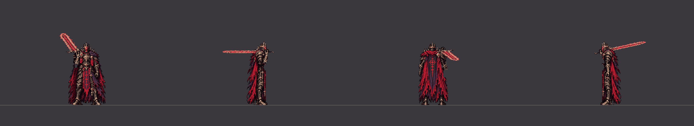
四個方向（2 倍）
朝下（60fps，3 倍）朝右（60fps，3 倍）朝上（60fps，3 倍）朝左（60fps，3 倍）往前走時出招（從走路循環第 10 張直接接迴旋）
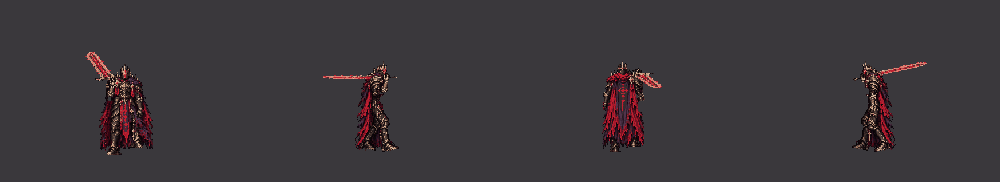
四個方向（2 倍）
朝下（60fps，3 倍）朝右（60fps，3 倍）朝上（60fps，3 倍）朝左（60fps，3 倍）側移時出招（從往左側移的循環第 5 張直接接迴旋）
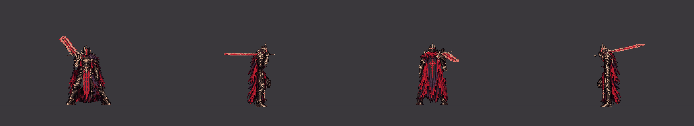
四個方向（2 倍）
朝下（60fps，3 倍）朝右（60fps，3 倍）朝上（60fps，3 倍）朝左（60fps，3 倍）劍掃過正前方的那一刻被完美彈返：被彈開 1.2 秒 → 扛劍站著
四個方向（2 倍）
朝下（60fps，3 倍）朝右（60fps，3 倍）朝上（60fps，3 倍）朝左（60fps，3 倍）
轉身那段逐張（2 倍）
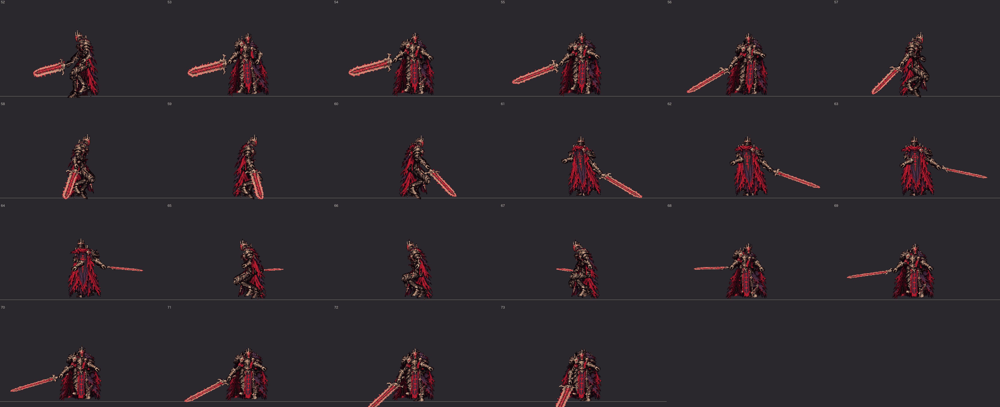
朝下：轉身那段（第 52–73 幀）每一張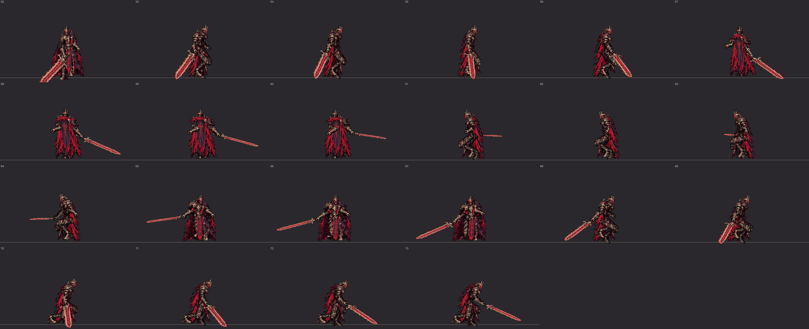
朝右：轉身那段（第 52–73 幀）每一張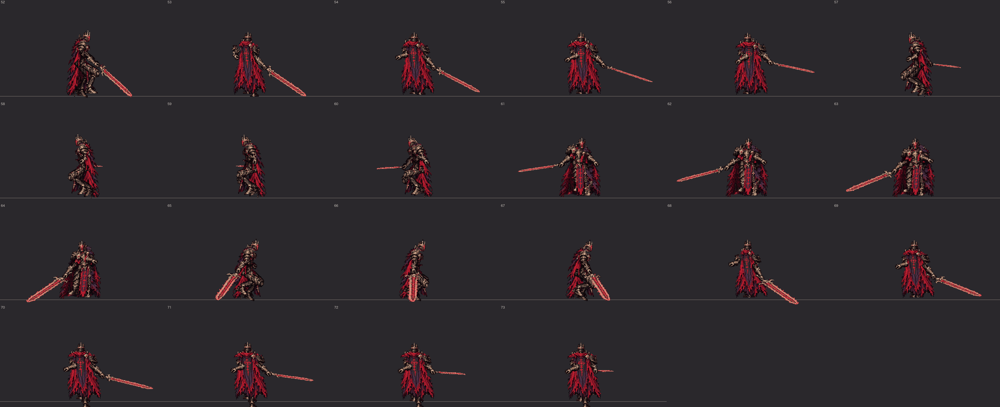
朝上：轉身那段（第 52–73 幀）每一張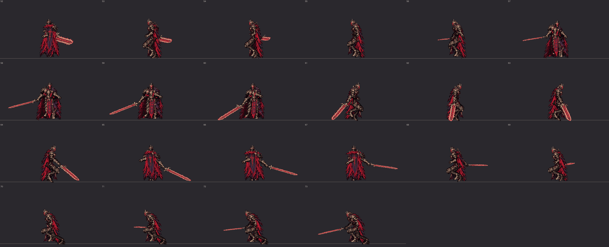
朝左：轉身那段（第 52–73 幀）每一張
握劍的手（放大 4 倍）
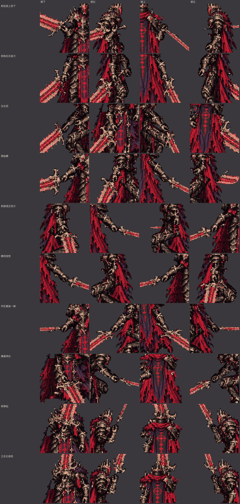
劍從肩上放下、劍拖在右後方、往右扭、開始轉、劍掃過正前方、轉到背對、判定最後一幀、蹲著停住、劍舉起、立在右肩前
側面的腿（只畫腿，綠線＝靠鏡頭的右腿，藍線＝左腿；每一張）
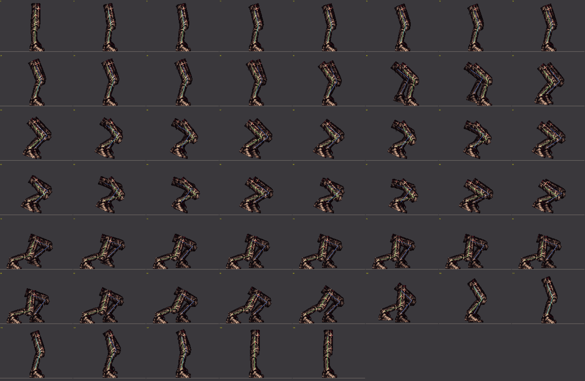
灰燼迴旋（C6 迴旋，右手單手，二階段）（每一張，照身體轉過去的面向看）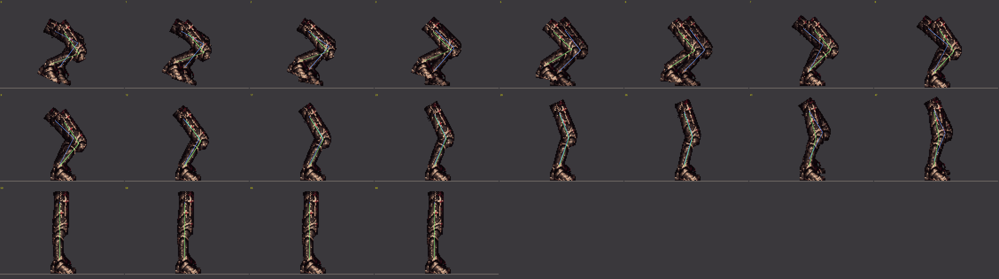
灰燼迴旋被彈開（每一張，照身體轉過去的面向看）
逐張
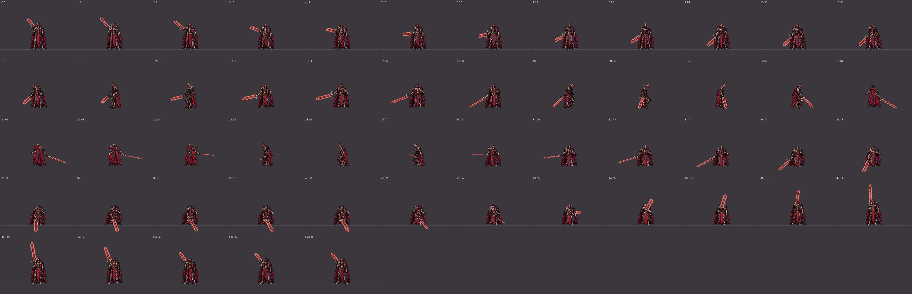
灰燼迴旋（C6 迴旋，右手單手，二階段） 朝下（第幾張：從出招開始的第幾個戰鬥幀）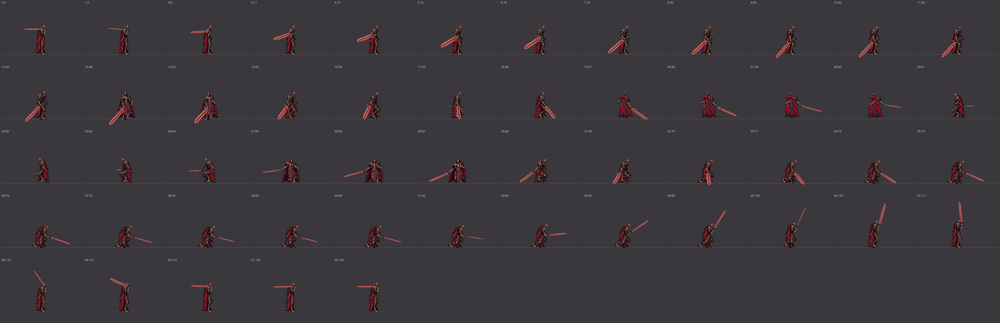
灰燼迴旋（C6 迴旋，右手單手，二階段） 朝右（第幾張：從出招開始的第幾個戰鬥幀）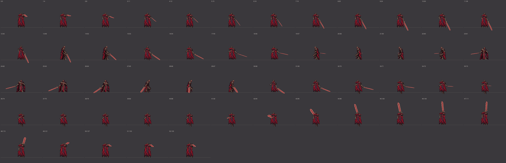
灰燼迴旋（C6 迴旋，右手單手，二階段） 朝上（第幾張：從出招開始的第幾個戰鬥幀）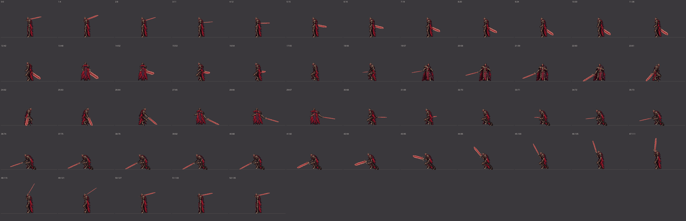
灰燼迴旋（C6 迴旋，右手單手，二階段） 朝左（第幾張：從出招開始的第幾個戰鬥幀）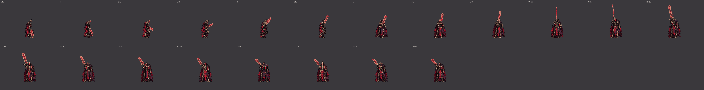
灰燼迴旋被彈開 朝下（第幾張：從出招開始的第幾個戰鬥幀）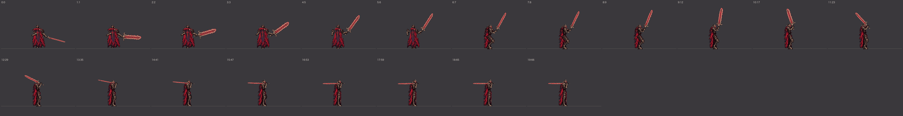
灰燼迴旋被彈開 朝右（第幾張：從出招開始的第幾個戰鬥幀）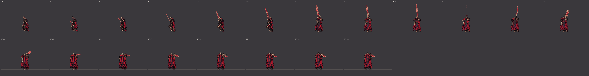
灰燼迴旋被彈開 朝上（第幾張：從出招開始的第幾個戰鬥幀）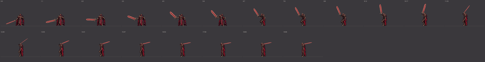
灰燼迴旋被彈開 朝左（第幾張：從出招開始的第幾個戰鬥幀）